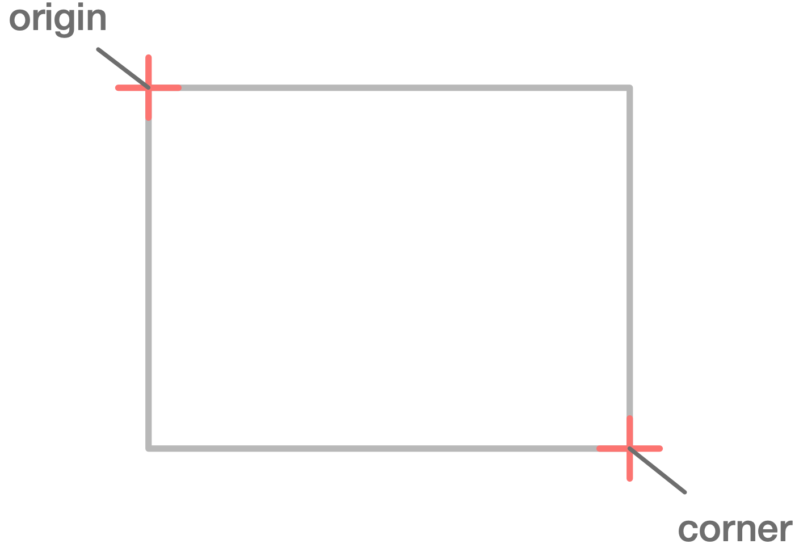
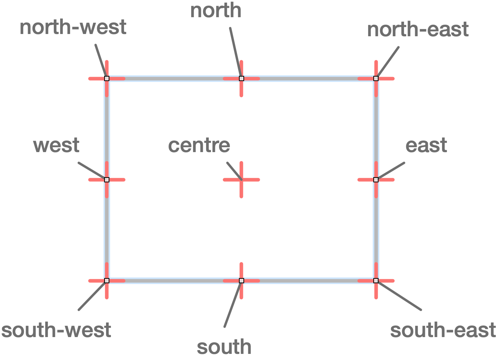
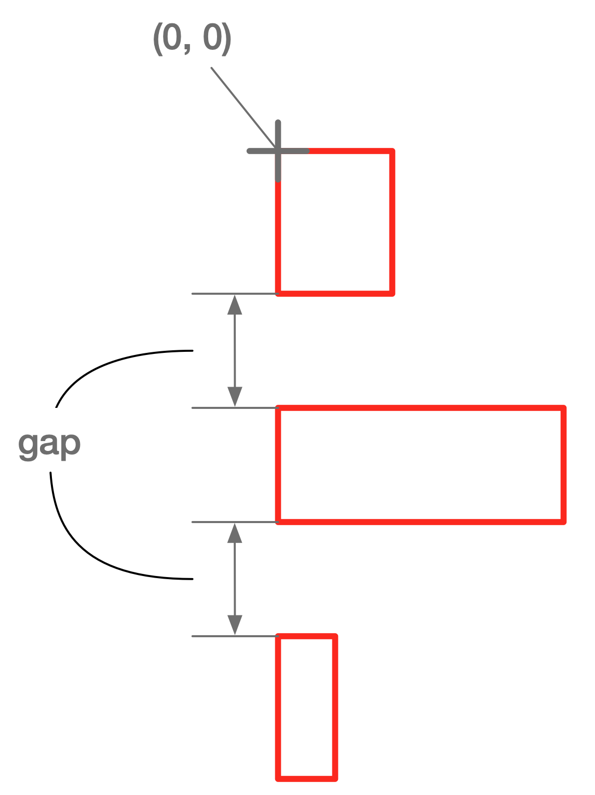
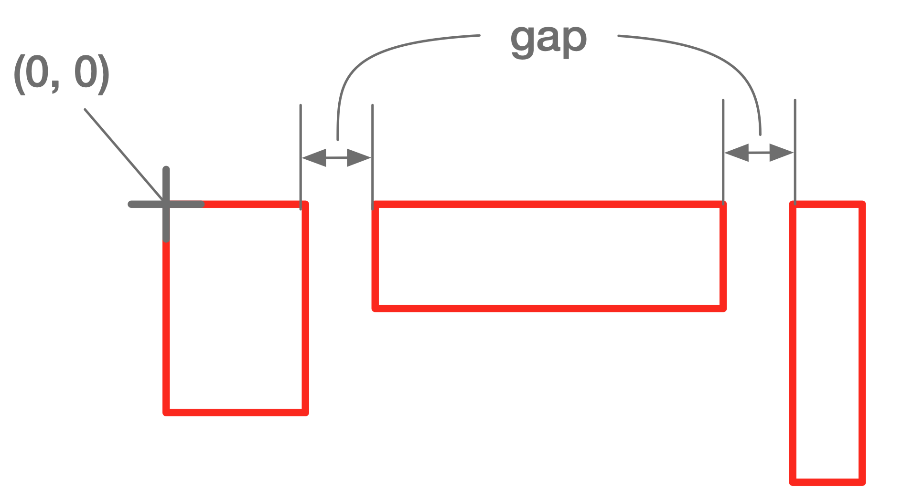
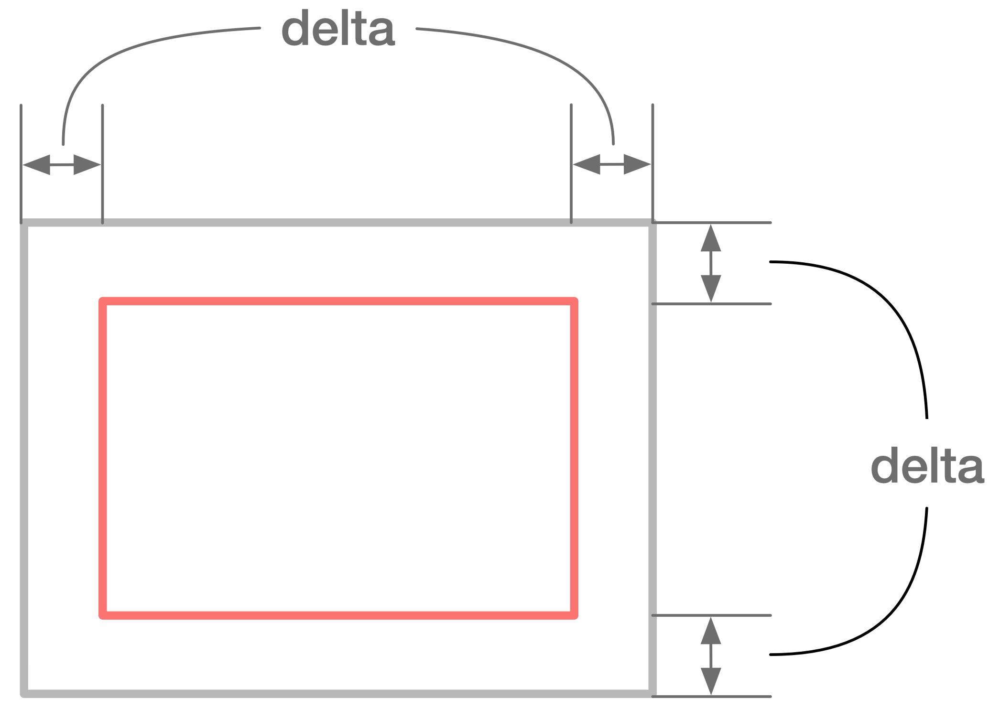
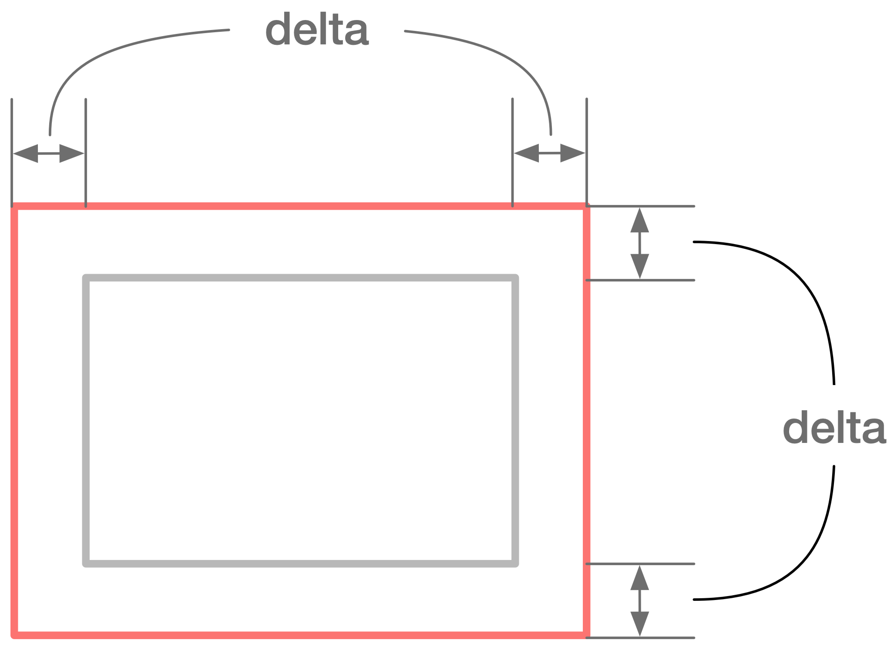
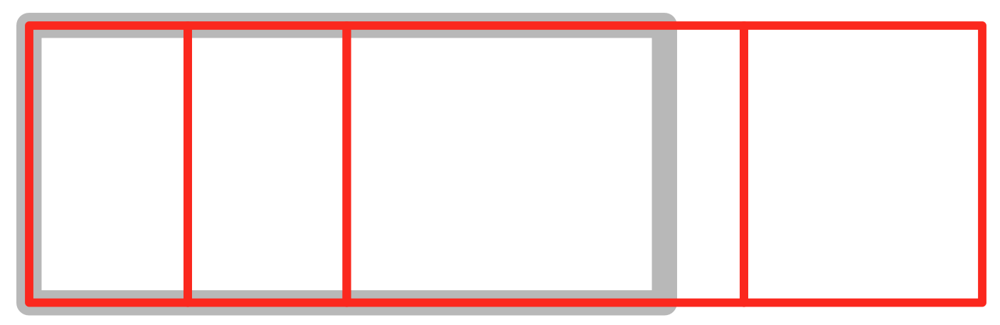
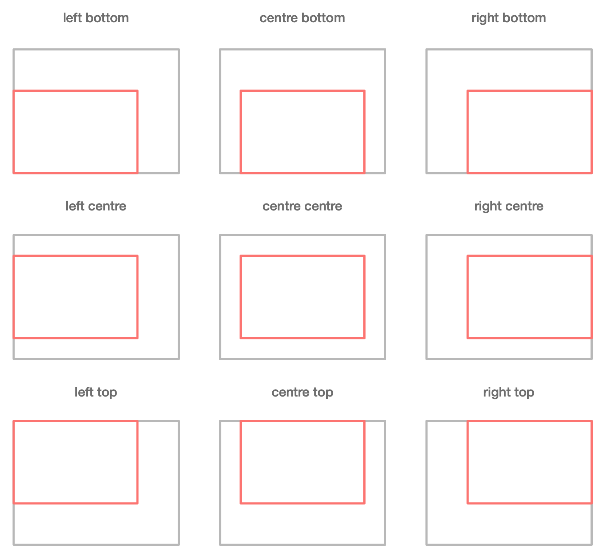

Class Rect
- All Implemented Interfaces:
HasTextBox,Values,Serializable
A Rectangle.
A rectangle
with its north-west point
origin
and its south-east point
corner
so its size is
corner - origin

This is used to layout widgets (and other things).
- See Also:
-
Field Summary
Fields -
Method Summary
Modifier and TypeMethodDescriptioncentre()The centre point of the rectangle.The rectangle that has the same size asthisand whose centre point ispThe rectangle with the samesizeasthisbut with origincontainer.center().The rectangle with the samesizeasthisbut with origincentre.booleantrueifplies inside (or on the boundary of)this.createColumns(ImList<Double> widths) Cut this rectangle into columns - Returnnrectangles with same height asthiswith each
width taken fromwidthswherenis the size ofwidths.east()The east point of the rectangle.The rectangle that has the same size asthisand whose east point ispexpandBy(double borderWidth) Expand by a border of borderWidth, keeping the origin the sameexpandBy(double x, double y) Expand by a border of x, y, keeping the origin the samestatic RectThe rectangle that minimally containsrsstatic Rectfrom(Rectangle2D r2d) The rectangle with the same origin and size asr2ddoubleThe height ofthisgetNames()The field names for this object including fields from superclasses.The representation ofthisas anAbstractTextBoxThe field values for this object including fields from superclasses.doublegetWidth()The width ofthisinset(double delta) The rectangle with the samecentreasthisbut with sizesize - 2*(delta, delta).A rectangle representingthisafter it has been justified incontainerbased on orientationorientand then offset byoffsetlayoutHorizontally(double gap, Point... sizes) A shortcut for:layoutHorizontally(gap, ImList.on(sizes)layoutHorizontally(double gap, ImList<Point> sizes) sizes.sizerectangles laid out left to right with the first one havingorigin=(0,0)with a horizontal gap between them ofgaplayoutVertically(double gap, Point... sizes) A shortcut for:layoutVertically(gap, ImList.on(sizes)layoutVertically(double gap, ImList<Point> sizes) sizes.sizerectangles laid out top down with the first one havingorigin=(0,0)with a vertical gap between them ofgap.The rectangle with the samesizeasthisbut with originorigin + point.moveByX(double dx) The rectangle with the samesizeasthisbut with originorigin + (dx, 0).moveByY(double dy) The rectangle with the samesizeasthisbut with originorigin + (0, dy).The rectangle with the samesizeasthisbut with originnewOrigin.moveToX(double x) The rectangle with the samesizeasthisbut with origin(x, origin.y).moveToY(double y) The rectangle with the samesizeasthisbut with origin(origin.x, y).north()The north point of the rectangle.The rectangle that has the same size asthisand whose north point ispThe north-east point of the rectangle.The rectangle that has the same size asthisand whose north-east point ispThe north-west point of the rectangle.The rectangle that has the same size asthisand whose north-west point ispstatic Recton(double x, double y, double width, double height) The rectangle with origin(x, y)and size(width, height)static RectThe rectangle with origin(x, y)and sizesizestatic RectoriginCorner(Point origin, Point corner) The rectangle with originoriginand cornercornerstatic RectoriginSize(Point origin, Point size) The rectangle with originoriginand sizesizeoutset(double delta) The rectanglethis.inset(-delta)A list withthisrepeatedcounttimes with each element having an offset ofoffsetfrom the previous element.setHeight(double h) The rectangle with the sameoriginandwidthasthisbut with heightheight.setWidth(double w) The rectangle with the sameoriginandheightasthisbut with widthwidth.static Rectsize(double x, double y) The rectangle with origin(0, 0)and size(x, y)static RectThe rectangle with origin(0, 0)and sizesizesouth()The south point of the rectangle.The rectangle that has the same size asthisand whose south point ispThe south-east point of the rectangle.The rectangle that has the same size asthisand whose south-east point ispThe south-west point of the rectangle.The rectangle that has the same size asthisand whose south-west point ispwest()The west point of the rectangle.The rectangle that has the same size asthisand whose west point ispMethods inherited from class dev.javafp.val.ImValuesImpl
equals, hashCode, toStringMethods inherited from interface dev.javafp.val.Values
defaultEquals
-
Field Details
-
origin
The north-west point -
size
The size -corner - origin -
corner
The south-east point
-
-
Method Details
-
originCorner
The rectangle with origin
originand cornercornerIf it is not the case that
origin.le(corner)thenoriginandcornerareswapped -
originSize
The rectangle with origin
originand sizesize -
size
The rectangle with origin
(0, 0)and sizesize -
size
The rectangle with origin
(0, 0)and size(x, y) -
on
The rectangle with origin
(x, y)and sizesize -
on
The rectangle with origin
(x, y)and size(width, height) -
from
The rectangle with the same origin and size as
r2d -
getTextBox
The representation of
thisas anAbstractTextBoxIf the class extends
ImValuesImplthen the defaulttoStringmethod will use this method and then convert the result to aString- Specified by:
getTextBoxin interfaceHasTextBox- Overrides:
getTextBoxin classImValuesImpl
-
getValues
The field values for this object including fields from superclasses. SeeValuesandImValuesImpl -
getNames
The field names for this object including fields from superclasses. SeeValuesandImValuesImpl -
centre
The centre point of the rectangle.

-
centre
The rectangle that has the same size as
thisand whose centre point isp -
north
The north point of the rectangle.
-
north
The rectangle that has the same size as
thisand whose north point isp -
south
The south point of the rectangle.
-
south
The rectangle that has the same size as
thisand whose south point isp -
east
The east point of the rectangle.
-
east
The rectangle that has the same size as
thisand whose east point isp -
west
The west point of the rectangle.
-
west
The rectangle that has the same size as
thisand whose west point isp -
northWest
The north-west point of the rectangle.
-
northWest
The rectangle that has the same size as
thisand whose north-west point isp -
northEast
The north-east point of the rectangle.
-
northEast
The rectangle that has the same size as
thisand whose north-east point isp -
southWest
The south-west point of the rectangle.
-
southWest
The rectangle that has the same size as
thisand whose south-west point isp -
southEast
The south-east point of the rectangle.
-
southEast
The rectangle that has the same size as
thisand whose south-east point isp -
contains
trueifplies inside (or on the boundary of)this. -
moveTo
The rectangle with the same
sizeasthisbut with originnewOrigin. -
moveByX
The rectangle with the same
sizeasthisbut with originorigin + (dx, 0). -
moveByY
The rectangle with the same
sizeasthisbut with originorigin + (0, dy). -
getWidth
public double getWidth()The width of
this -
getHeight
public double getHeight()The height of
this -
setWidth
The rectangle with the same
originandheightasthisbut with widthwidth. -
setHeight
The rectangle with the same
originandwidthasthisbut with heightheight. -
repeat
A list with
thisrepeatedcounttimes with each element having an offset ofoffsetfrom the previous element.The list of rectangles:
or[this, this.moveBy(offset), this.moveBy(offset*2).., this.moveBy(offset*count) ][]' ifcount== 0`If
count < 0theArgumentShouldNotBeLessThanis thrown -
layoutVertically
A shortcut for:
layoutVertically(gap, ImList.on(sizes) -
layoutVertically
sizes.sizerectangles laid out top down with the first one havingorigin=(0,0)with a vertical gap between them ofgap.The
ithrectangle hassize=sizes.at(i)
-
layoutHorizontally
A shortcut for:
layoutHorizontally(gap, ImList.on(sizes) -
layoutHorizontally
sizes.sizerectangles laid out left to right with the first one havingorigin=(0,0)with a horizontal gap between them ofgapThe
ithrectangle hassize=sizes.at(i)
-
centreIn
The rectangle with the same
sizeasthisbut with origincontainer.center(). -
centreOn
The rectangle with the same
sizeasthisbut with origincentre. -
moveToY
The rectangle with the same
sizeasthisbut with origin(origin.x, y). -
moveToX
The rectangle with the same
sizeasthisbut with origin(x, origin.y). -
inset
The rectangle with the same
centreasthisbut with sizesize - 2*(delta, delta).
-
outset
The rectangle
this.inset(-delta)
-
createColumns
Cut this rectangle into columns - Return
nrectangles with same height asthiswith each
width taken fromwidthswherenis the size ofwidths.They are laid left to right with the first rectangle having the same origin as
this. The sum of the widths of the rectangles will not necessarily be the width ofthis.
-
justifyIn
A rectangle representing
thisafter it has been justified incontainerbased on orientationorientand then offset byoffset
-
expandBy
Expand by a border of borderWidth, keeping the origin the same
-
expandBy
Expand by a border of x, y, keeping the origin the same
-
extent
The rectangle that minimally contains
rs -
moveBy
The rectangle with the same
sizeasthisbut with originorigin + point.
-